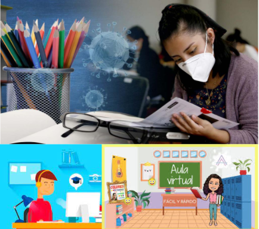

Bienvenidos a la informacion de las entidades educativas superoires por respecto al manejo del Covid
Inicio
Su impacto en la educacion superior
En América Latina y el Caribe existen aproximadamente 25 millones de estudiantes de educación terciaria
afectados por la pandemia. Un 45% en promedio de los hogares de la región tiene
conexión fija a Internet mientras que las zonas rurales esta cobertura
es más baja. Considerando que el 40% de las comunidades indígenas en la región se encuentran
enclavadas en entornos rurales, ello supone un gran contingente poblacional en
riesgo de exclusión o desvinculación del proceso educativo. En la región hacen vida más de 800
pueblos indígenas representando un universo aproximado de 58 millones de ciudadanos.

Temas
Pedagogía
La modalidad y la dinámica del docente virtual es diferente a la del docente presencial. Hay
que desarrollar la legitimidad de los profesores que se
inician en el mundo virtual , definiendo instrumentos efectivos para acreditar los saberes.
Las dinámicas de una evaluación efectiva en un contexto de educación presencial se han revelado
diferentes a las de un contexto de educación virtual.
Por consiguiente, hay que desarrollar instrumentos de evaluación apropiados para la teleeducación
¿Qué tan bueno es lo que estamos haciendo? No solo se deben orientar esfuerzos a implementar una estructura
virtual,sino que hay que velar por la calidad de la enseñanza , cuestionando y buscando retroalimentar lo que
se ha hecho hasta el momento.
ha evidenciado la importancia de desarrollar un plan de movilidad virtual para facilitar un modelo inclusivo a
estudiantes y profesores en diferentes condiciones (tomando en cuenta aquellos que no pueden asistir a las clases
presenciales por causas relacionadas con el COVID-19), incluyendo soluciones presenciales, virtuales y híbridos.
La movilidad virtual también se convierte en una gran oportunidad para aquellos estudiantes que
deseen matricularse en materias de otras instituciones, al verso facilitada la interacción y colaboración entre universidades.
Resalta la importancia de incluya herramientas tecnologicas que faciliten la interacción digital , incluyendo programas
como realidad virtual, realidad aumentada , inteligencia artificial, hologramas y aprendizaje adaptativo . Igualmente, es
clave la utilización de la nube para coordinar la estrategia educativa, asi como el uso de para el fortalecimiento de las
capacidades de las estructuras de ciberseguridad , al considerar las amenazas potenciales en los sistemas
Heno asignaturas que no se van a poder abrir porque requiere proximidad y contacto , como es el caso de algunas
practicas en programas de ciencias de la salud. Igualmente sucede en el caso de los laboratorios. Como consecuencia,
se ha considerado que estas tareas se reactivan cuando se pueda retomar el contacto.
Profesorado
Se ha observado que la exposición a la nueva modalidad Ha generado más apertura por parte de los docentes que
inicialmente demostraron resistencia al cambio, revelando una ruptura de barreras de percepción del formato virtual.
Es importante hacer un reconocimiento a los docentes y otorgarles incentivos que honren sus esfuerzos en medio
de esta coyuntura. considerando que el regreso a la presencialidad va a tardar, hay que encontrar mecanismos rapidos
y efectivos que despierten su interés, como habilitar recursos y generar salarios diferenciados.
Estudiantado
La coyuntura ha creado un cambio en los estudiantes porque la generacion sus expectativas vitales y laborales
también están cambiando. Los estudiantes tienen nuevas expectativas basadas en la inmediatez de las respuestas y
la disponibilidad del contenido pedagógico, por lo que las universidades deben de poder responder y adaptado a las
nuevas necesidades. De lo contrario, aparecerán otros agentes que lo haran, poniendo en riesgo al sector universitario.
El foco no solo debe estar en el tema técnico, sino que también debe atender las necesidades emocionales y mentales
de los estudiantes. hemos incursionado en una etapa alta tecnología , pero también debe ser alto contacto entre la
comunidad academica y los estudiantes. Entre las posibles soluciones, se deben ampliar, acompañar y promover las actividades
culturales y deportivas en los hogares de los estudiantes, considerando las carencias que pueda presentar su entorno
Contexto universitario
La transformación digital universitaria no es una simple mutación digital, sino que ha electrocutado transformación
cultural en la experiencia universitaria. En efecto, las universidades deben reformarse porque la sociedad también lo
está haciendo.
Es importante no abandonar el modelo presencial , a la vez que seguir desarrollando la modalidad virtual. La
digitalización llegó para quedarse, pero el valor del campus como espacio educativo sigue siendo irremplazable.
El acompañamiento ha sido un elemento central en lo pedagógico, en lo emocional, para profesores y estudiantes,
exaltando la importancia de la colaboración.
Recursos digitales
La transformación digital universitaria no es una simple mutación digital, sino que ha electrocutado transformación cultural
en la experiencia universitaria. En efecto, las universidades deben reformarse porque la sociedad también lo está haciendo.
Es importante no abandonar el modelo presencial , a la vez que seguir desarrollando la modalidad virtual. La digitalización
llegó para quedarse, pero el valor del campus como espacio educativo sigue siendo irremplazable.
El acompañamiento ha sido un elemento central en lo pedagógico, en lo emocional, para profesores y estudiantes,
exaltando la importancia de la colaboración. La educación superior en tiempos de COVID-19
Aprendizajes
responsabilidad de asegurar el derecho a la educación superior de todas las personas, en un contexto de igualdad de
oportunidades que, en línea con los Objetivos de Desarrollo Sostenible
es muy pronunciada y requiere de apoyo externo en lo tecnológico y en lo pedagógico. Sobre todo, en la docencia,
la transición desde modelos presenciales a aprendizajes virtuales es un procesocomplejo que va más allá del hecho
tecnológico e implica aproximaciones disruptivas en el terreno pedagógico y en el de la gestión organizativa y académica